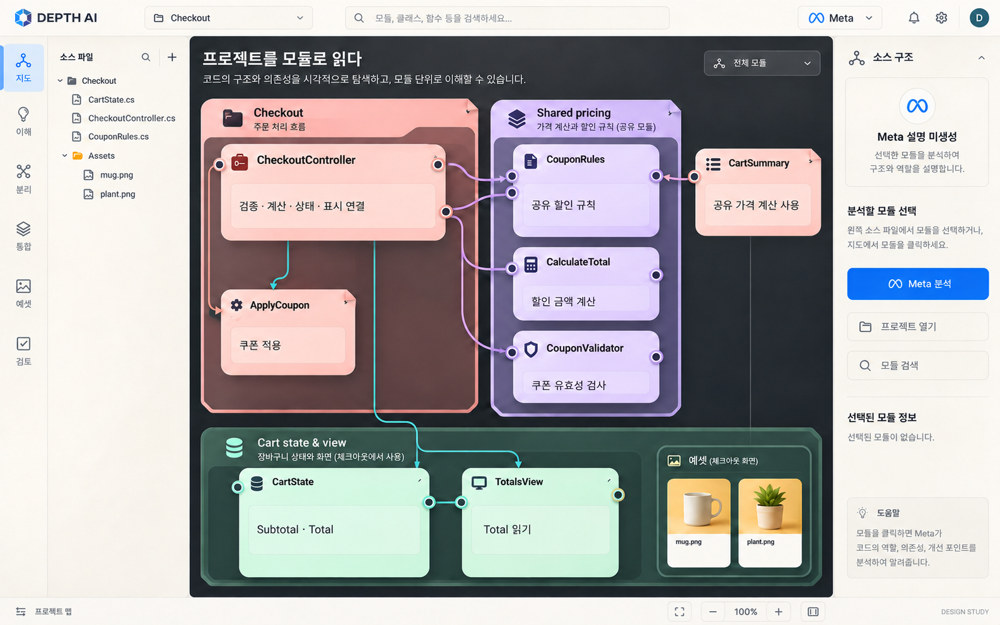
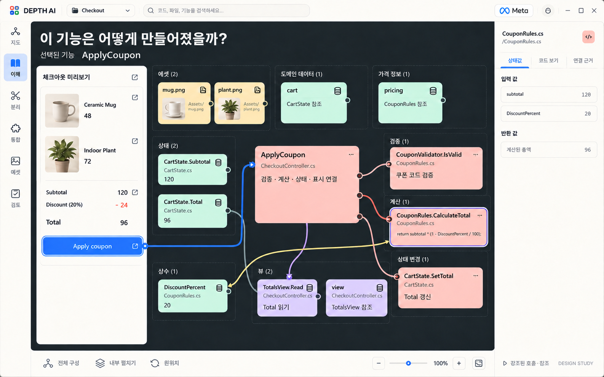
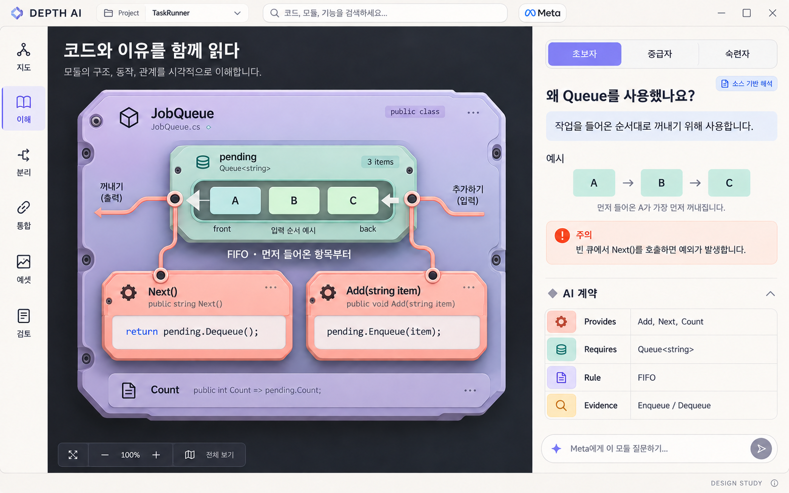
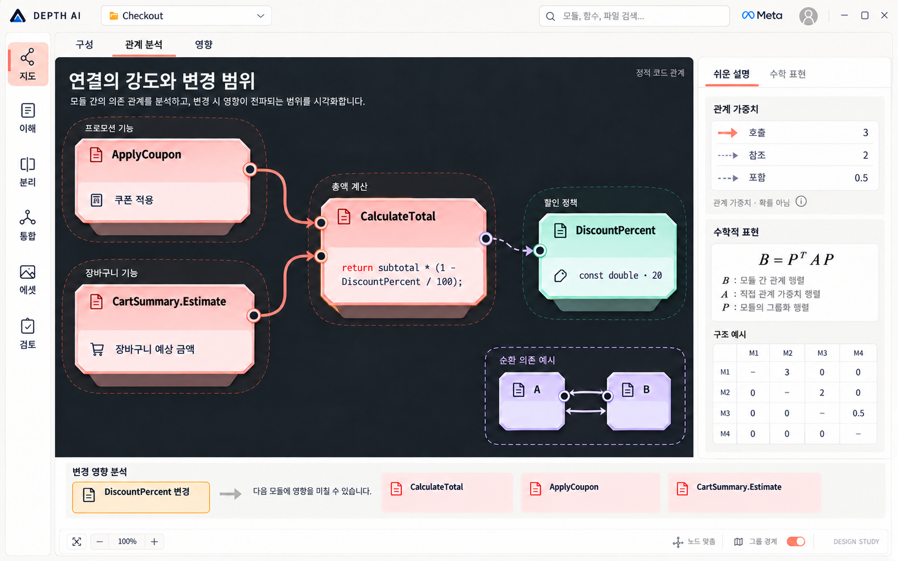
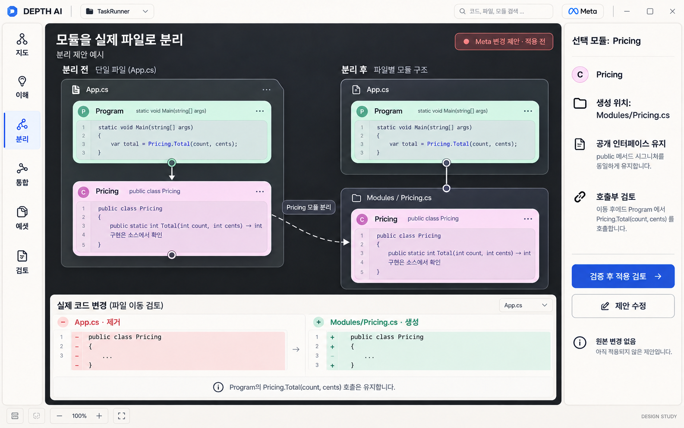
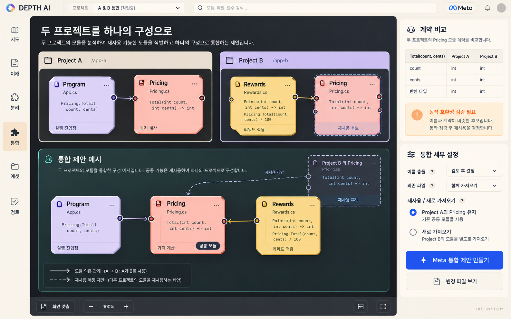
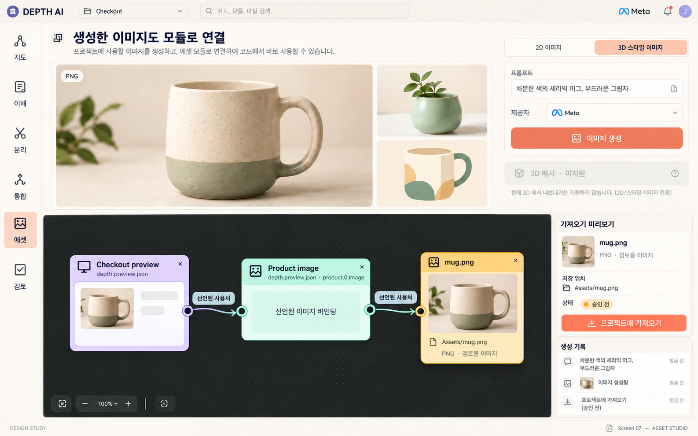
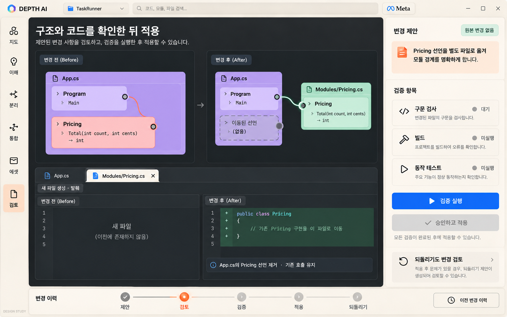

새 시각 설계 제안입니다. 실행 화면이나 기능 검증 결과가 아닙니다. 현재 코드 기반의 기능과 추가로 구현할 화면을 함께 표현했습니다. 3D 스타일 이미지는 PNG이며 실제 3D 메시와 구분합니다. 작은 코드·선 배치의 구현 명세는 분석 문서와 소스를 기준으로 합니다.
01프로젝트 전체 지도
프로젝트를 역할별 모듈로 읽고, 여러 기능이 함께 쓰는 구현과 분석 대상을 찾는 첫 화면.

02화면 요소와 전체 모듈 구성
화면 요소에서 출발해 관련 함수·상태·참조·에셋을 한 작업면에서 함께 확인하는 구성 화면.

03이해 수준별 설명과 AI 계약
모듈 내부와 코드 근거를 펼쳐 보고, 초보자부터 숙련자까지 같은 내용을 다른 깊이로 읽는 화면.

04수학적 관계와 변경 영향
가중 관계, 모듈 경계와 변경 영향을 연결해 보고, 수학적 표현까지 확인하는 분석 화면.

05실제 파일의 모듈 분리
한 파일에 있던 선언이 실제 새 파일로 이동하는 과정과 호출 유지 여부를 검토하는 화면.

06두 프로젝트의 모듈 통합
두 프로젝트의 모듈 계약을 비교하고, 재사용 후보와 새로운 연결을 검토하는 통합 화면.

07Meta 이미지 생성과 사용처 연결
Meta 이미지 생성, PNG 검토, 프로젝트 가져오기와 선언된 사용처를 잇는 제작 화면.

08변경 검토·검증·적용·되돌리기
구조·파일 차이·검증 상태를 함께 확인하고, 승인 적용과 되돌리기로 이어지는 화면.
